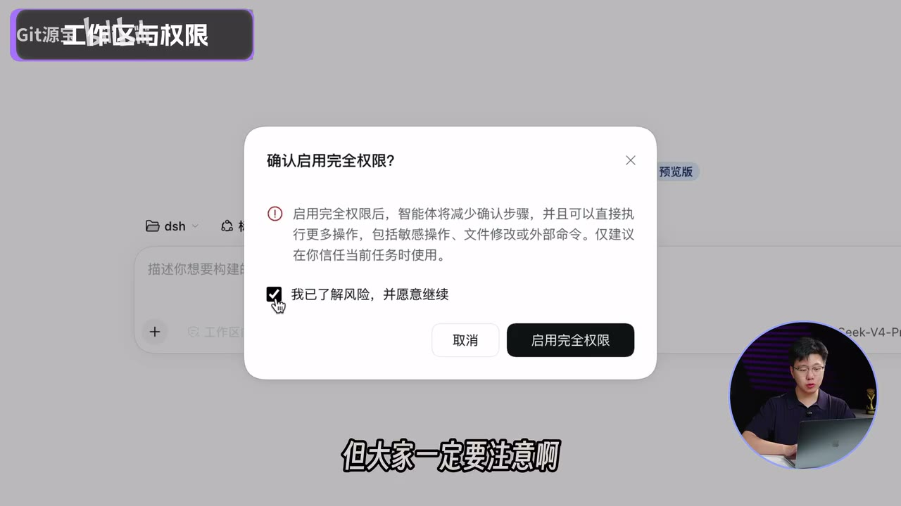

原视频 · 在线回看
点击后联网加载 B 站播放器；本地不下载整段视频。

原视频 · 在线回看
点击后联网加载 B 站播放器；本地不下载整段视频。
原视频标题：【全网最全】DeepSeek Harness超详细教程！50分钟吃透DSH，让SuperAgent给你干活！
上传者：Git源宝
时长：50:41
来源：Bilibili 视频页
总结强度：deep
DeepSeek 是模型提供方，Harness 则把模型接入文件、命令、网页和插件等工作工具。桌面端可以在选定的工作区里读取或修改文件、运行命令、搜索资料，再根据任务需要继续调用工具。上传者用“马与马具”打比方：模型负责理解要求和安排下一步，Harness 提供工作环境、权限和工具。
这也解释了它与聊天网页的使用差别：网页聊天通常要由人上传资料、复制修改结果；桌面 agent 可以在获得相应权限后直接访问工作区，并把重复处理交给程序。课程把整个流程拆成四个控制点：模式规定工具怎样组织，指令控制当前对话，工作区和权限划定可操作范围，插件则增加具体能力。
课程按当时桌面端界面演示 Windows 与 macOS 安装：从官网选择对应安装包，Windows 运行安装程序，macOS 将应用拖入 Applications。安装后登录账号；上传者提醒，设置和已装插件跟账号走。Windows 部分还建议把程序安装到 D 盘，这属于他的磁盘安排建议，不是软件的必要条件。
首次启动时，桌面端会引导用户处理调用额度。视频区分了两种接入方式：可以使用账号内余额调用模型，也可以在设置中粘贴已购买的 API Key；使用第三方模型时，需要添加供应商、选择模型并填写 API Key。保存后选择模型发一条简单消息，确认连接可用。
这里的充值金额用于 API 调用。API Key 是连接凭据，token 是模型处理文本时的计量单位，两者用途不同。已有可用 API 的人可以按视频演示跳过桌面端充值步骤，直接配置 API Key。
桌面端大致分为左侧导航、中央对话区和右侧停靠面板。左侧可以新建对话、按工作区管理记录并打开插件；中央区域输入任务和附件。右侧面板提供当前工作区文件浏览、终端和浏览器，还能并排查看页面与运行结果。
同一任务有“对话”和“轨迹”两种查看方式。对话适合快速读结论；轨迹按轮次记录模型调用工具的过程，并显示耗时、token 用量等信息。需要复盘 agent 读了什么、调用了哪些工具或在哪一步花费较多时，可以查看轨迹。
课程讲了四种模式。标准模式提供文件编辑、Shell、文件和网页检索、计划与子 agent 等常用能力，适合一般文件和资料任务。上传者用整理课程笔记做示例：让 agent 在工作区查找 Word 笔记，再提取核心概念和练习内容。
PTC（Programmatic Tool Calling）模式让 agent 先编写程序，再通过生成的工具 SDK 批量调用工具。程序可以组织循环、条件、错误处理和并发步骤；因此重复动作多、需要批量处理时更合适。视频用同一份笔记整理任务比较标准模式与 PTC：两者得到的结果相近，但标准模式逐项调用工具，PTC 的轨迹更集中在程序与结果上。上传者据此认为 PTC 在这个例子里更省 token；这项比较没有公布可复用的完整任务数据。
极简模式只保留持久化 Shell 和文件编辑器，适合用较少工具观察模型的基础表现。创造模式面向想扩展 Harness 本身的人，除标准工具外还提供运行时检查、插件管理和开发指引，用来编写插件、界面或自定义模式。
视频给出的选择口诀是：拿不准时先用标准模式；重复动作多、要批量处理时考虑 PTC；要改造工作台时用创造模式；做基础能力测试时用极简模式。一个对话创建后不能中途换模式，但可以在同一对话中切换模型。
先选工作区，再确定 agent 能做什么。课程演示了四档权限：只读允许查看；工作区内修改允许读写当前工作区，访问工作区以外的文件会被拦截；完全权限会在开启时提示风险，越界操作仍可能逐次要求审批；另一档“自动授权审查”需先启用相应插件，由模型在工具调用前做审查。
自动审查会消耗额外 token，也可能把不安全操作放过，或拒绝原本有用的操作。视频中的建议是日常从工作区内修改开始，按任务需要逐步扩大权限。权限设置影响的是可操作范围和审批方式，不会替代对工作区内容和输出结果的核对。
视频把斜杠菜单中的八条指令按用途归纳：计划、权限切换、上下文压缩、上传文件、切换模型、管理长期目标、提交反馈和导出对话。指令本身由界面处理；如果指令后再附一段任务要求，那部分文字才作为请求发送给模型。计划指令可以先列出执行步骤，用户看过计划再决定是否继续；导出指令则把当前对话打包成 ZIP。
同一个斜杠菜单还列出三项 Office 技能，分别处理 Word、PowerPoint 和 Excel 文件。技能可以新建、读取或修改对应文件；PowerPoint 示例要求生成五页、每页一个重点，并使用可编辑图表；Excel 示例把课程清单整理为学习进度表。生成文件仍需检查内容、页数、图表和排版。
这三项技能的流程包含生成、结构检查和预览：先生成文件，再检查文件是否损坏、内容是否写入、页数或表格数量是否符合要求，最后渲染为图片或 PDF 检查版面。视频强调 Office 技能会调用模型，使用会产生 token 消耗。
Harness 有内置插件，也允许安装社区插件。视频先演示一款记忆插件：在一个对话里保存“先讲概念、再举例、最后出练习题”的笔记偏好，再开启新对话询问这个偏好。新对话复述成功，演示了插件可以把部分信息沉淀为跨对话可用的记忆。插件界面还提供记忆、待办和技能等交互入口。
接着安装插件市场。遇到陌生插件时，上传者用计划指令先让 agent 阅读说明、检查兼容性、列出安装位置和用法，再审阅计划并批准执行。插件市场随后提供浏览、安装和统一管理入口。长对话中可以用压缩指令把之前的内容整理成摘要；课程建议在上下文接近上限、agent 开始遗忘前文或重复内容时考虑压缩。
最后的实作把记忆、插件市场和视频课程整理插件组合起来，目标是定时查看浏览器当前课程页面，识别新视频，按关键词归类，并为已有或新学科更新笔记。提示词还要求结合视频内容、弹幕和评论生成知识摘要并保存为 Word。上传者选择 PTC 模式处理重复轮询与分类，再让 agent 生成一个带启动开关、轮询时间设置和实时状态界面的简单前端。
演示中，助手识别了正在播放的视频；换到另一个学科的视频后，页面显示新视频及新的学科分类。摘要质量、评论数据完整性和长期轮询稳定性没有在这一段实测。
上传者还介绍了导出对话 ZIP、任务完成通知和远程网页访问等扩展能力。全片的主线可以概括为：先安装并连通模型，再选模式和工作区，设置权限与指令，最后按需要安装插件并组合成自己的流程。
桌面 Harness 把模型接入本地文件、命令和插件。先用标准模式与工作区内权限完成普通任务，再按批量处理、文件制作或跨对话记忆等需求增加 PTC、Office 技能和插件。课程助手案例展示了从明确需求、审阅计划到运行界面的过程。